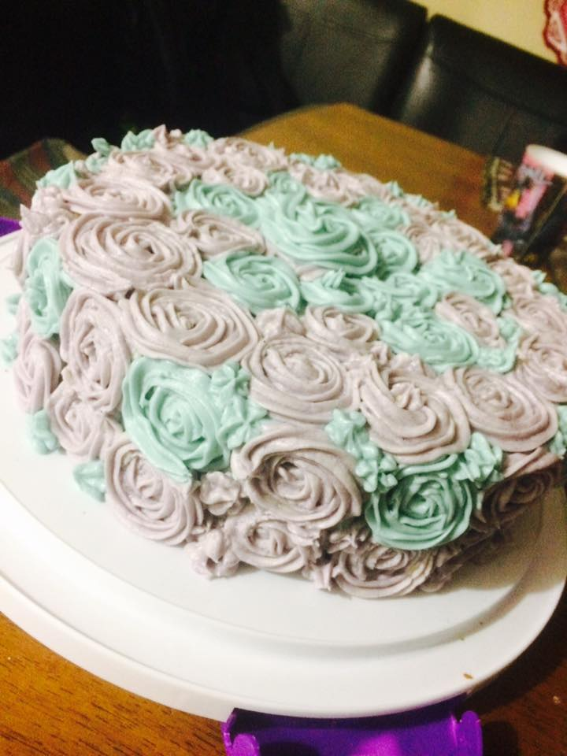
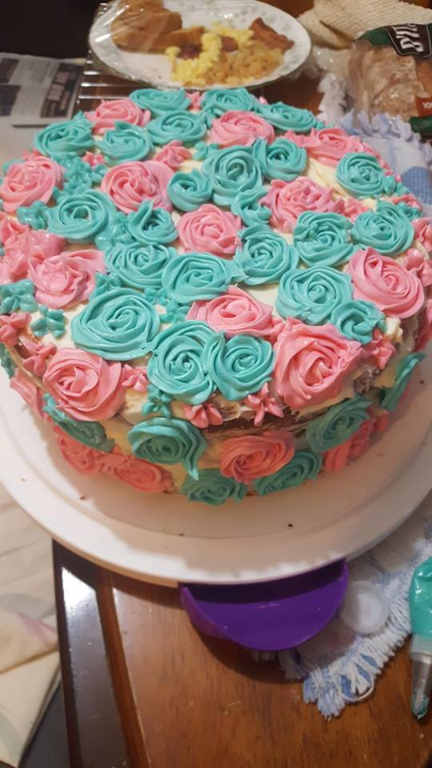
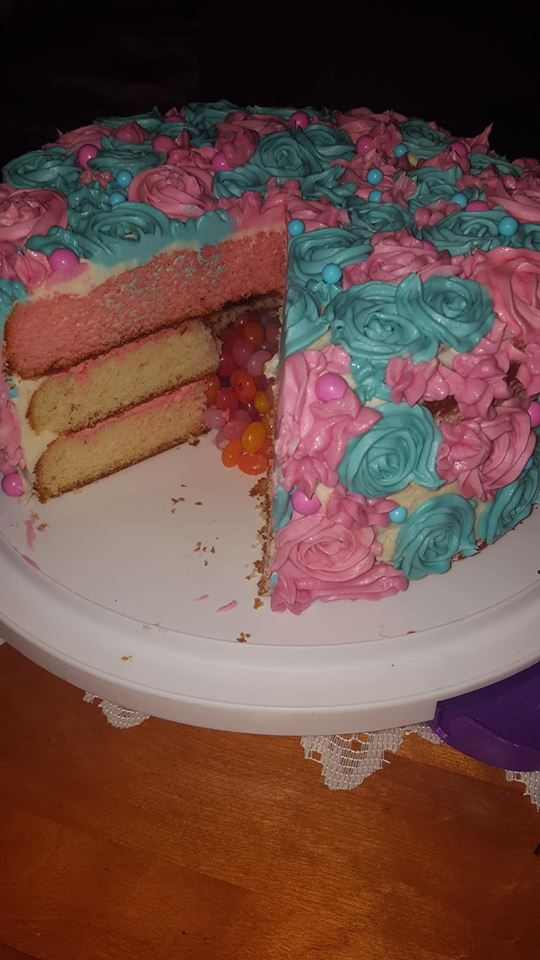
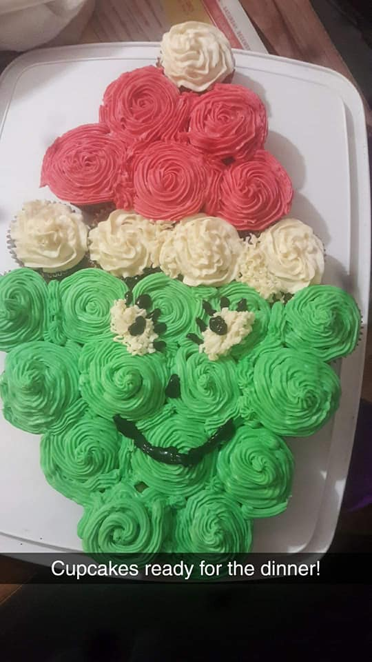
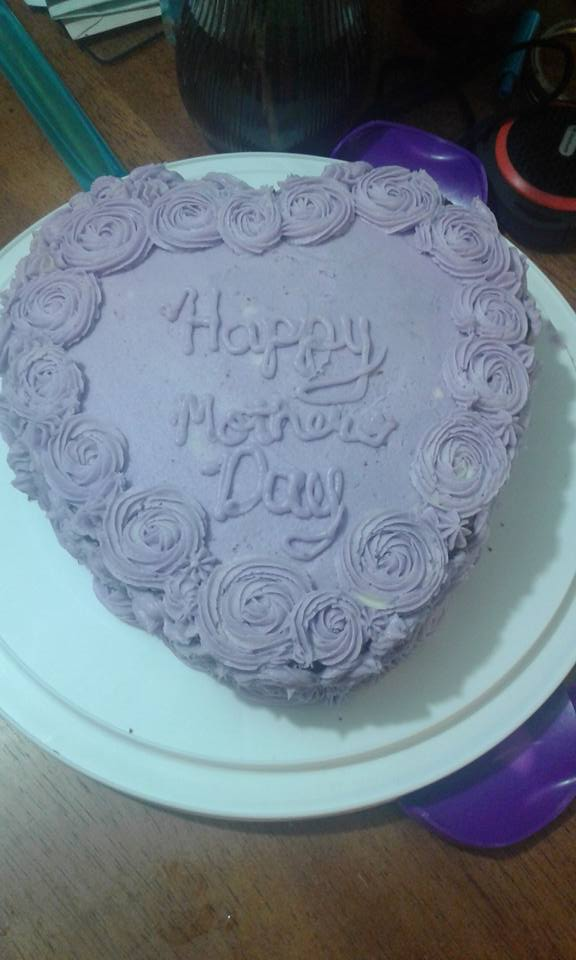
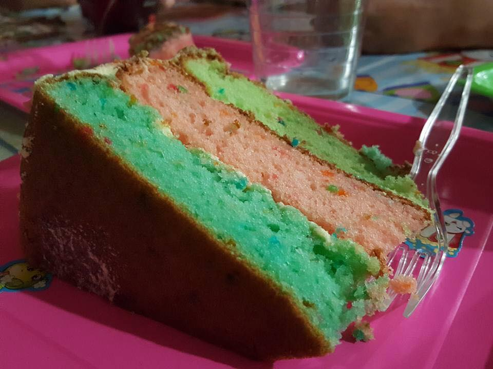
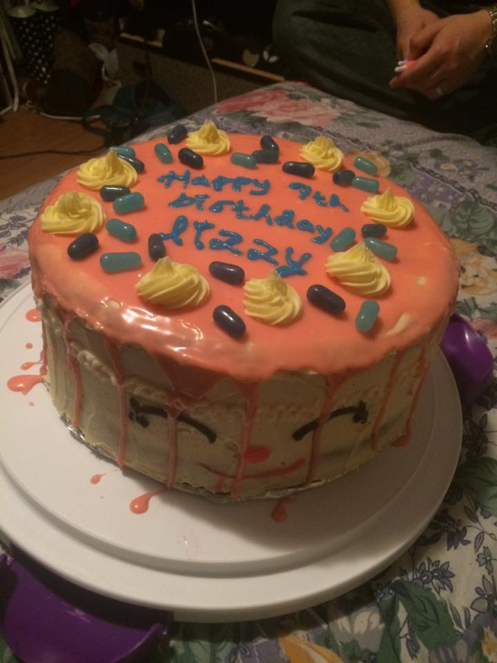
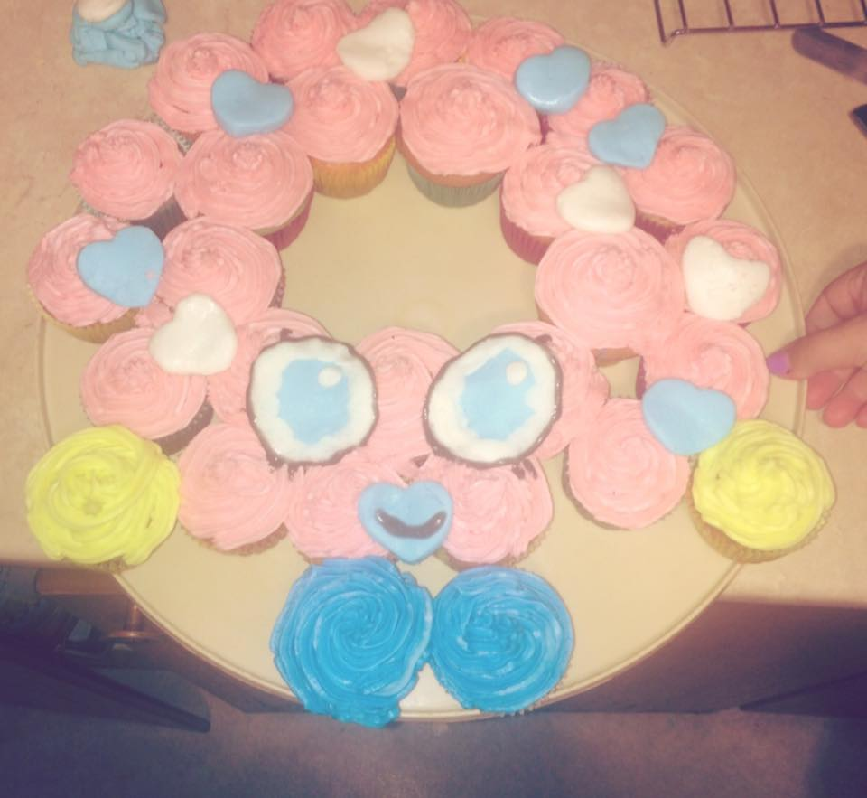
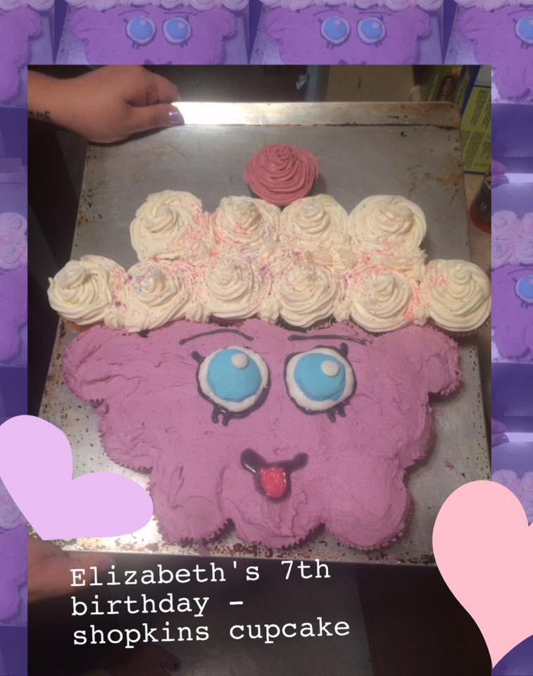

Welcome
This website will be about my baking.
baking is my passion
piece of cake will be the name.
About
my name is Grace
Piece of cake is a home-based bakery in Prince Rupert, BC. Please call or text so we can talk about your next special occasion and how to make it a memorable and custom experience.
contact me
- by phone: 778-361-3369
- by email: Graceprbrown@outlook.com
- Search on FB: Grace Patricia Brown
my favorite snickerdoodle recipe!
Ingredients
- 2 3/4 cups of all-purpose flour
- 2 teaspoons baking powder
- 1/2 teaspoon salt
- 1 teaspoon cinnamon
- 1 cup of butter
- 1 1/4 cups of sugar
- 1/4 brown sugar
- 2 large eggs
- 1/2 teaspoon vanilla
Loved it!
Here are some photos of cakes i've made for birthdays, gender reveals, mothers day, easter,christmas and baby showers.
        
 Ginger snap recipe
Baking
Ginger snap recipe
Baking